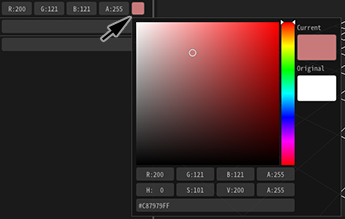

03. Let's display the image!¶
Overview¶
In this chapter, images are displayed on particles. Until now it was a white square, but the white square changes to an image. In addition, we will gradually make the particles transparent and change color.
Preliminary knowledge - When the window is closed, the arrangement of windows is wrong¶
If you switch windows, the placement may become strange or it may close. In that case, select "Window" in the menu bar. When "Reset Window Position" is selected, the position of each window is returned to the initial position. If you select the name of each window, you can open that window.
Display image¶
It is troublesome to prepare images yourself, so we can download the pre-created effects from the link below.
Image settings¶
Let's set the image to the white square immediately. The image is set from the "Basic Render Settings" window. Click the icon of "Basic Render Settings" on the tab on the upper right.
An icon of Basic Render Settings
Click on the icon of "Basic Render Settings" and then click on the node, the "Basic Render Settings" window will be displayed.

"Basic Render Settings" window
Click the Load button in the picture of "Basic Render Settings" window. When clicked, a window for selecting the image is displayed. Select particle.png. When you select an image, the image will also be displayed on Effekseer.

Image
When you play the effect, you can see that the white square has changed to an image.
Image
Fade in and out settings¶
It is unnatural for particles to appear suddenly or disappear. Let's set fade in and fade out so that the transparency change.
Fade in can be set by changing the value of fade in in the "Basic Render Settings" window. Similarly, fade-out can be set by changing the value of fade-out in the "Basic Render Settings" window. We will enter 15 for both this time.

Fade
You can see that the effect appears and disappears gradually.

Fade
Sprite¶
Effekseer has several drawing methods. The default method is "Sprite". You can draw rectangular particles. Although it is difficult only by the contents described up to this chapter, you can create such an effect.
Sprite
In the "Render Settings" window, you can set the functions specific to the currently selected drawing method. Let's display the "Render Settings" window as it displayed the "Basic Render Settings" window.
An icon of Render Settings
"Render Settings" window
Color settings¶
You have set transparency with fade in, but You cannot set the color of the particles. Although there is no problem if the image is colorful, you will need to prepare multiple images to change the color for each particle. Therefore, you can specify a rough trend of color of particles if a sprite is selected.
You can specify that color in the "Render Settings" window. There are several methods to specify colors. For this time you choose random as the color changes for each particle. Then you set the min of the value to 0. This means that values are randomly chosen between 0 and 255 colors.
In addition to the text box, the color can be entered by left-clicking the color field with the mouse.
Left-click and drag a color field to copy the value to another color field.

Specifiy a color
You can see that the color is different for each particle.
Specifiy a color
Blend settings¶
Effekseer allows you to set the method of alpha blending of particles. Blend is a method of combining particles and background. As shown in the figure below, you can just draw particles or add it to the background.

Blend mode
For this time you set the method of blending to add for brightening the particles. You can set the blend method in the "Basic Render Settings" window.
Blend mode
If you add the method of blending, you can see that the particles are displayed bright.

Specify blend
Finally, I made it possible to download the effect created in this chapter.
Summery¶
In this chapter, we changed the sprite parameters to improve the appearance of the particles. In the next chapter, we will explain the shape of sprites, rotation and enlargement of particles.